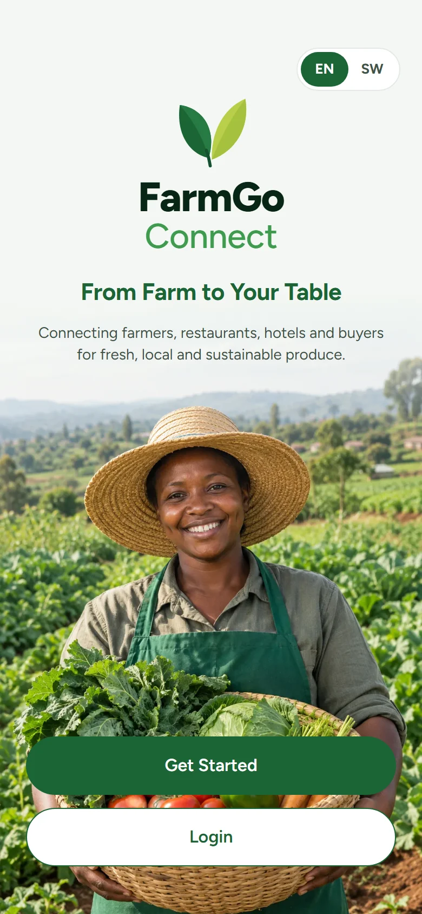

Create an account
Pick what describes you best. Farmers and households sign up with a phone number; hotels, restaurants and youth enterprises use an email address.
- Open the app and tap Get Started. Use the EN SW switch at the top to choose your language first.
- Choose Hotel / Restaurant, Farmer, Youth Enterprise or Individual / Household.
- With a phone number, tap Send code and type the 6-digit code from the SMS. With email, fill in your name, email and a password, then tap Create account.
- Tick I agree to the Terms and Privacy Policy.
- Finish the short setup. Farmers add their county, M-Pesa number for payments and their farm, pinned on the map. Businesses add the business name, type, phone and KRA PIN. Households add where to deliver. Then tap Finish setup.
You need to be 18 or older to sign up. At the end of setup, tap Turn on notifications so you never miss an order.